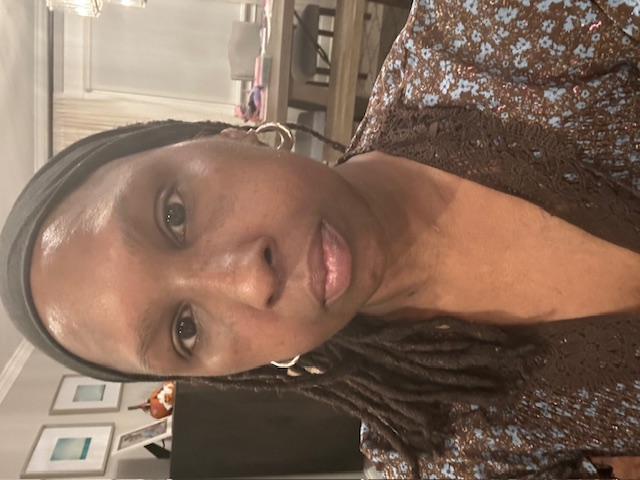
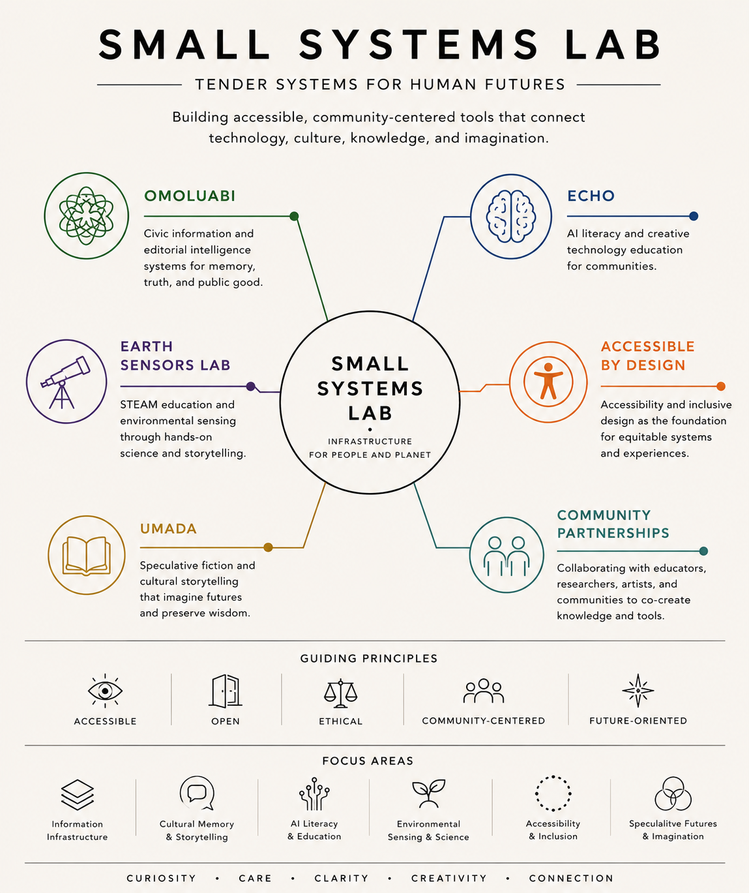
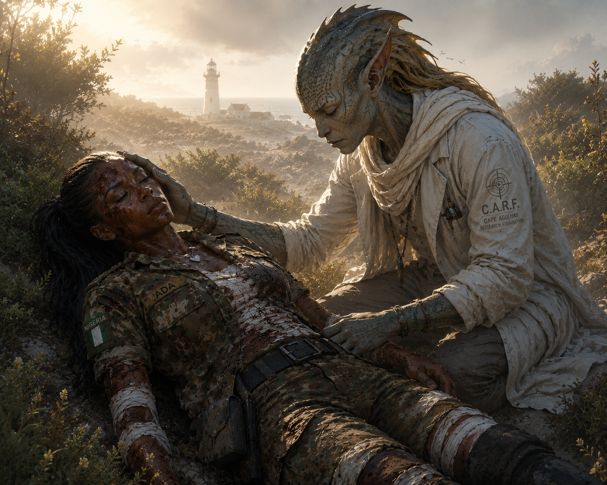

Omoluabi
Civic information and editorial intelligence for memory, truth, and context.
Repository ↗ Live
Artist · Journalist · Creative Technologist · Educator · Accessibility Advocate
Tender systems for human futures.
I work at the intersection of accessibility, civic information, AI literacy, environmental observation, cultural memory, and speculative storytelling — through research, design, technology, and public-interest inquiry.
My practice draws from journalism, disability advocacy, artist support, emerging technology, and worldbuilding. Through software, education, writing, and creative work, I investigate how systems shape the way people learn, communicate, remember, and imagine futures.
I helped build early digital journalism infrastructure during the formative years of online publishing, including online newsrooms I built and directed while living in Nigeria. A severe case of drug-resistant malaria there triggered a neurological illness that became Guillain-Barré syndrome and, later, chronic inflammatory demyelinating polyneuropathy (CIDP) — an experience that reshaped my relationship with technology and deepened a commitment to designing systems that widen who gets to participate and observe. Small Systems Lab grew out of that through-line.
Small Systems Lab (SSL) is my independent research and creative practice — a small ecosystem of projects, in formation. It builds accessible, community-centered tools that connect technology, culture, knowledge, and imagination.

Civic information and editorial intelligence for memory, truth, and context.
Repository ↗ LiveAI literacy and creative technology education for communities.
Repository ↗ LiveSTEAM education and environmental sensing through hands-on science and storytelling.
Repository ↗ LiveSpeculative fiction and cultural storytelling that imagine futures and preserve wisdom.
Repository ↗ LiveAccessibility and inclusive design as the foundation for equitable systems and experiences.
In developmentCollaborating with educators, researchers, artists, and communities to co-create knowledge and tools.
In developmentSmall Systems Lab builds tender systems through operations of care, rule-based intelligence, ancient geometry, accessibility, and public knowledge. SSL asks operational questions before technical ones: who is served, what is collected, what is refused, what consent exists, what risk is created, what must be withheld, what can return to the community, and who has authority to override the machine.
Omoluabi works from a principle of sovereignty over observation: the person who noticed something controls how it is held, when it moves, what form it takes, and who benefits. It is the infrastructure that keeps the interval open for consent, context, and care — on terms set by the observer, not the system.
![Overview poster for Omoluabi, shown as a portable handheld device with a companion web engine. The left side lists core qualities — multilingual access, verifiable provenance, preservation of cultural memory, and a public-interest focus — alongside web-engine features such as source discovery, a context graph, provenance tracking, a human-reviewed translation layer, and local-first data control. The right side renders the cream-colored e-ink device with a simple menu (Search, Explore Sources, Translate, Timeline, Archive, Settings) and the line: Information is power. Context is clarity. Memory is resistance.](assets/omoluabi-device.png)
![Industrial-design spec sheet for the Omoluabi device, a rugged handheld field recorder, shown from front, back, side, and bottom. Labelled parts include a status LED, an 8MP camera and flash, a sunlight-readable touchscreen, physical navigation buttons that work with gloves, a directional microphone array, a modular body with replaceable battery, a textured grip, a lanyard loop, power and record buttons, volume and zoom controls, a USB-C port, and an SD card slot. Side panels list core principles — Truth First, People Centered, Do No Harm, Open and Accountable, Built to Last.](assets/omoluabi-spec.png)
